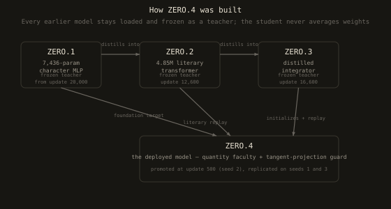
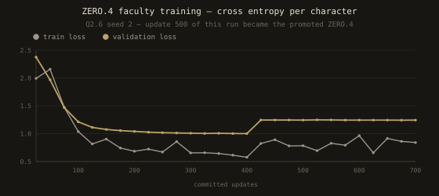
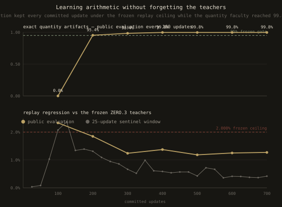
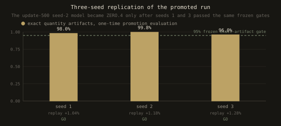
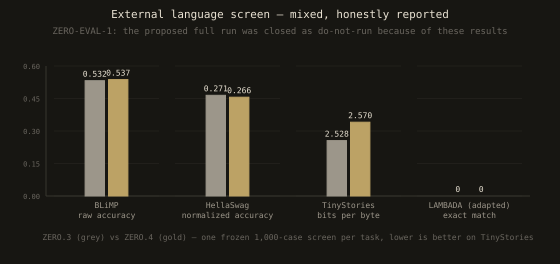
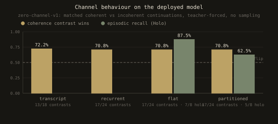

SMALL MODEL · EVERYTHING ON THE RECORD
ZERO.4
the model card.
A 4,852,992-parameter character-level transformer, written in dependency-free C, trained under preregistered gates, and promoted after three seeds passed them. This card shows how it was built, what the training looked like, what it can and cannot do — warts included.
01 — THE MODEL
Model details
A decoder-only transformer with hand-written forward and backward passes. There is no
external tensor library, no autodiff, and no tokenizer library; the gradient is verified
against finite differences in every make check.
model.litq8 SHA-256 · 44b32f2262be2754fd2eeaf16ed206bae32b4ce30d7f5541a1059cd21257ae50 · selected prospectively at update 500 (seed 2) · promoted 2026-07-24 after three-seed replication
02 — HOW IT WAS BUILT
Four models, never merged
ZERO.4 was not trained from random weights onto a pile of text. Each generation was trained against frozen, immutable teachers from the generations before it — the student never averages weights, and the teachers never change under it.

| FROZEN TEACHER | WHAT IT CONSTRAINS |
|---|---|
| ZERO.1 | A 7,436-parameter MLP. Constrains the explicit foundation stream only. |
| ZERO.2 | The 4.85M literary transformer. Replayed on every source to prevent forgetting. |
| ZERO.3 | The distilled integrator. Initializes the student and holds the replay baseline. |
On foundation sequences the student minimizes
0.60·observed + 0.15·ZERO.2 + 0.25·ZERO.1; elsewhere
0.85·observed + 0.15·ZERO.2. The quantity faculty adds typed
operation records, but the model never computes arithmetic itself: it learns to emit the
right request, and an input-bound deterministic kernel alone calculates and
commits exact results.
That responsibility split is the whole trick. Small models cannot copy numbers reliably — earlier experiments proved it — but they can learn when to delegate.
03 — TRAINING
700 updates, every one a transaction
The promoted run (Q2.6, seed 2) trained for 700 updates on one CPU core. Before every commit, the candidate update was projected off the direction that would hurt replay, and accepted only if cumulative replay stayed within budget.


04 — REPLICATION
One seed is not evidence
The update-500 model became ZERO.4 only after seeds 1 and 3 passed the same frozen contract, with no post-hoc selection and no optional stopping.

05 — EVALUATION
Scores, honestly reported
A 4.85M character model does not become a general assistant. These are the measured results on frozen, preregistered evaluations — including the ones that disappointed us.


06 — LIMITS
Intended use and out-of-scope use
What ZERO.4 is for, and what nobody should use it for.
| INTENDED FOR |
|---|
| Research |
| Teaching: every operation is readable C |
| Regression testing of small-model ideas |
| Studying replay-protected continual learning |
| Studying delegated-tool correctness |
| NOT FOR |
|---|
| General assistance or advice |
| Factual question answering |
| Production chat with real people |
| Any claim of general language skill |
| Children or safety-critical contexts |
Training data. Project-authored foundation statements; Shakespeare and Blake editions marked public-domain in the USA by Project Gutenberg; Crowley works from Project Gutenberg and CC BY-SA Wikisource transcriptions; a deliberately low-weight King James Bible stream; literary dialogue records derived from those sources; and generated typed quantity records. No human chat export appears in the bound training lineage. Full provenance, attribution, and jurisdiction notes are in CORPUS_RIGHTS.md.
Known weaknesses. External scores are weak by modern standards; greedy generation can loop; the channel memory is lossy and the episodic index is a small exact hash-recall, not learned retrieval; the quantity delegation is honest only because the kernel is input-bound and the controller rejects mismatched arguments.
07 — VERIFY
Check everything yourself
Every number on this card regenerates from frozen records in the repository.
Regenerate these charts:
node scripts/render_model_card_charts.mjs.
Verify the promotion record:
make zero4-promotion-check.
Reproduce the deployed artifact:
make web.
Run the model locally without a browser:
./literary_infer docs/model.litq8 "The zero opened its eyes, and" 240.